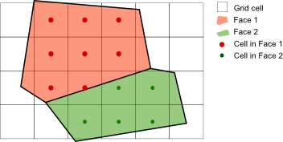
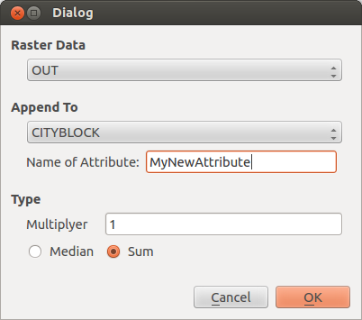

The Module intersects faces defined by a view with raster data field. Either the sum or the mean value of the cells within a face is added as an user defined attribute to the face. To check if a cell is with a face the centroid of the cell is used (see Figure 2.)

As input data for raster data and a view containing faces are required. Figure 3 shows the input dialog. If the data in port is connected to the data stream, a raster data set can be chosen with the Raster Data combo box. The view that contains the faces to which the new calculated attributes are added can be defined in the Append To combo box. In Name of Attribute the attribute name is defined.
You can select between sum or median values. Additional a Multiplier that is multiplied with calculated value can be defined.
